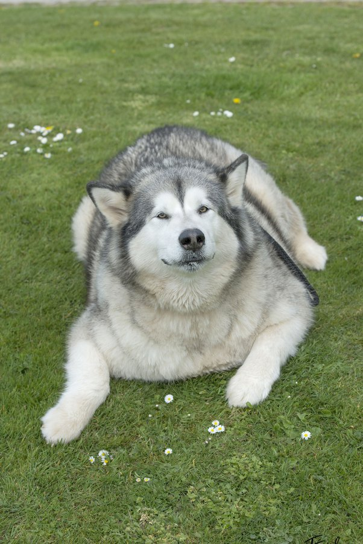
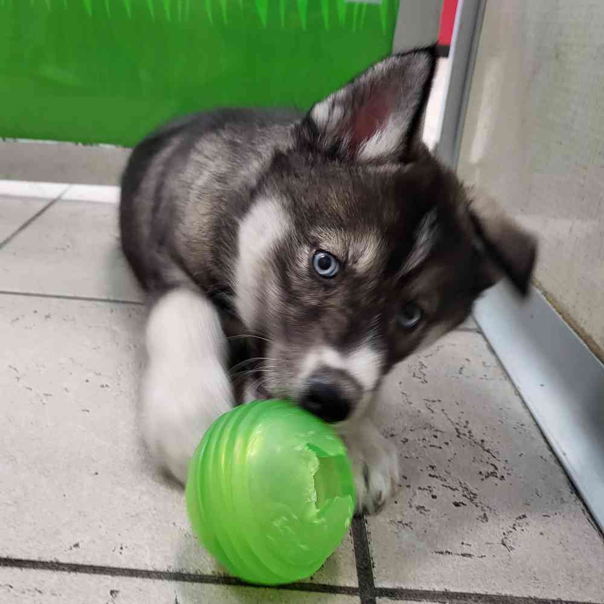
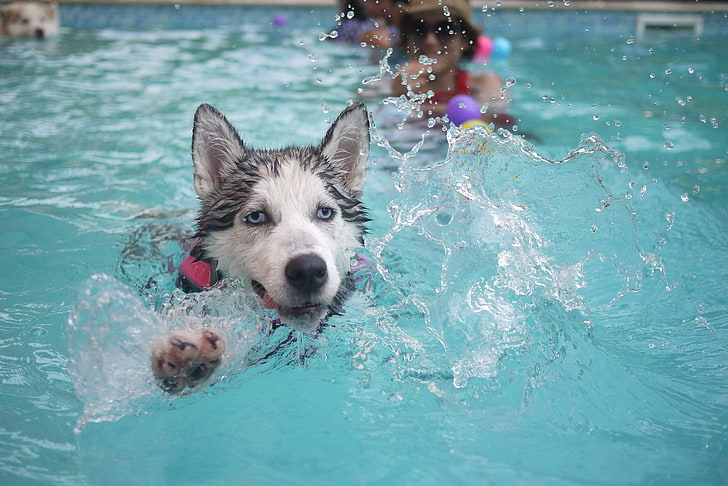
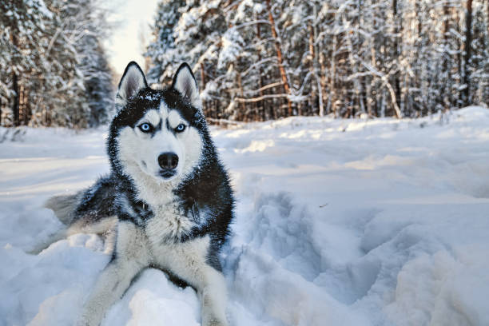

Pets
Bacon

Bacon Q. Dog is a 9yr old labradoodle. He prefers to spend his days lounging among the three different beds/couches that his family has gifted him. He enjoys a walk or two around the neighborhood, as long as he can pretend that he doesn't see any of the other animals to avoid the embarrassment of not wanting to admit he has no wolf-like skills in chasing them.
At night just as the rest of the family is ready to relax, Bacon suddenly wants to release all of his energy. He will place his toys on a mini couch and frantically drag the couch around, giving his toys "a ride." There is also a lot of rolling. Lots and lots of rolling.
Photo Gallery


Likes
- Belly rubs
- Playing tug-of-war
- Sneaking onto the couch
Cody

Cody is a 7yr old Pembroke Corgi. He was born in Cavalier Farms, Seattle. He prefers to spend his days lounging on the bean bag. Every day, he enjoys two walks around the neighborhood and likes to make friends with other doggie friends. If lucky enough, he might see the cyclist, but he is not allowed to give chase.
Cody loves traveling. He enjoys walking on the beach and taking sun naps. But he hates cold weather. He would like to stay at home lounging by the fireplace in winter.
Photo Gallery


Likes
- Traveling
- Lounging
- Tennis balls
Max
Max the husky is a 5-year-old bundle of sunshine with a heart as golden as his coat. His fur glistens like freshly polished brass under the warm sunlight, and it's as soft as a cloud to the touch. His expressive, almond-shaped eyes are the color of rich, melted caramel, always sparkling with a playful curiosity that's impossible to resist.
Standing at an impressive 24 inches tall at the shoulder, Max carries himself with an air of gentle dignity that belies his goofy and lovable nature. His well-muscled body is the embodiment of strength and agility, yet his graceful movements make him seem almost weightless as he bounds through life with unbridled enthusiasm.
Photo Gallery
  Likes
- Fetching
- Running
- Playing with other dogs